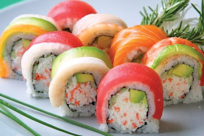

What is Sushi and Why is it so Great?
Originating from Japan, sushi is cooked vinegared rice, topped with different ingredients such as raw seafood, vegetables, and sometimes even fruits. Although the ingredients used may vary widely, all sushi has rice as an ingredient. Sashimi (thinly sliced raw fish) is sometimes mistaken as sushi, but is actually another Japanese delicacy. I really like sushi because it is kind of like a form of art; properly prepared and displayed, while using the freshest ingredients. Of course, I think it tastes good as well!
Different Types of Sushi
There are many different types of sushi. The method of assembly is what creates the different resulting variations of sushi, even though they all have similar ingredients. Here are just a few of the different kinds of sushi:
- Nigiri
- Maki rolls
- Temaki
For more information on the different types of sushi, this site is great as a reference.